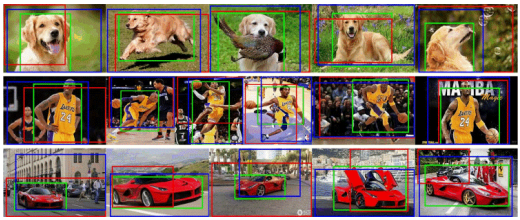
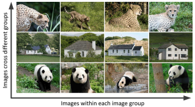

|  |
Dingwen Zhang, Deyu Meng, Junwei Han: Co-Saliency Detection via a Self-Paced Multiple-Instance Learning Framework. IEEE Transactions on Pattern Analysis and Machine Intelligence (T-PAMI), 2017.
Dingwen Zhang, Deyu Meng, Chao Li, Lu Jiang, Qian Zhao, Junwei Han: A Self-Paced Multiple-Instance Learning Framework for Co-Saliency Detection. IEEE International Conference on Computer Vision (ICCV), 2015. |
[Dataset] [Results] |
|
Dingwen Zhang, Junwei Han, Yu Zhang: Supervision by Fusion: Towards Unsupervised Learning of Deep Salient Object Detector. IEEE International Conference on Computer Vision (ICCV), 2017. |
[PaperLink] |
 |
Dingwen Zhang, Junwei Han, Lu Jiang, Senmao Ye, Xiaojun Chang: Revealing Event Saliency in Unconstrained Video Collection. IEEE Transactions on Image Processing (T-IP), 2017. |
[PaperLink] |
|
Dingwen Zhang, Le Yang, Deyu Meng, Dong Xu, Junwei Han: SPFTN: A Self-Paced Fine-Tuning Network for Segmenting Objects in Weakly Labelled Videos. IEEE Conference on Computer Vision and Pattern Recognition (CVPR), 2017. |
[PaperLink] |
 |
Dingwen Zhang, Junwei Han, Yang Yang, Dong Huang: Learning Category-Specific 3D Shape Models from Weakly Labeled 2D Images. IEEE Conference on Computer Vision and Pattern Recognition (CVPR), 2017. |
[PaperLink] |
|  |
Dingwen Zhang, Junwei Han, Chao Li, Jingdong Wang, Xuelong Li: Detection of Co-salient Objects by Looking Deep and Wide. International Journal of Computer Vision (IJCV), 2016.
Dingwen Zhang, Junwei Han, Chao Li, Jingdong Wang: Co-saliency Detection via Looking Deep and Wide. IEEE Conference on Computer Vision and Pattern Recognition (CVPR), 2015. |
[Dataset] [Results] |
|
Dingwen Zhang, Junwei Han, Jungong Han, Ling Shao: Cosaliency Detection Based on Intrasaliency Prior Transfer and Deep Intersaliency Mining. IEEE Transactions on Nerual Networks and Learning Systems (T-NNLS), 2016. |
[Dataset] [Results] |
|
Dingwen Zhang, Deyu Meng, Long Zhao, Junwei Han: Bridging Saliency Detection to Weakly Supervised Object Detection Based on Self-paced Curriculum Learning. International Joint Conference on Artificial Intelligence (IJCAI), 2016. |
[PaperLink] |
 |
Junwei Han, Dingwen Zhang, Shifeng Wen, Lei Guo, Tianming Liu, Xuelong Li: Two-Stage Learning to Predict Human Eye Fixations via SDAEs. IEEE Transactions on Cybernetics (T-CYB), 2016.
Junwei Han, Dingwen Zhang, Xintao Hu, Lei Guo, Jinchang Ren, Feng Wu: Background Prior-Based Salient Object Detection via Deep Reconstruction Residual. IEEE Transactions on Circuits and Systems for Video Technology (T-CSVT), 2015. |
[Project] |
 |
Junwei Han, Dingwen Zhang, Gong Cheng, Lei Guo, Jinchang Ren: Object Detection in Optical Remote Sensing Images Based on Weakly Supervised Learning and High-Level Feature Learning. IEEE Transactions on Geoscience and Remote Sensing (T-GRS), 2015.
Dingwen Zhang, Junwei Han, Gong Cheng, Zhenbao Liu, Shuhui Bu, Lei Guo: Weakly Supervised Learning for Target Detection in Remote Sensing Images. IEEE Geoscience and Remote Sensing Letters (GRSL), 2015. |
[Dataset] |